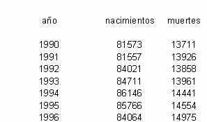

Tema 3: Crecimiento
Poblacional Compuesto
con tasa cambiante
Actividad de comprobación
Instrucciones:
A) Lea detenidamente y resuelva lo que se le pide.
Se recomienda
imprimir las instrucciones de la actividad.
B)
Envíe la actividad terminada al instructor por medio de attachment a la siguiente
dirección: servicio@campus.cegs.itesm.mx
En
una universidad hay en 1998, 58,400 alumnos de los cuales el 7% practica algún
tipo de deporte. La tasa anual de crecimiento del número de alumnos que
practican algún deporte es de 8.2 %. Por campañas que se están
haciendo a favor de la práctica deportiva se espera que esta tasa aumente
en un 5.1 % anual. Suponiendo que esto se cumpla, estimar el número de
alumnos que practican algún tipo de deporte para el año 2009.
1.1
Resolverlo utilizando el modelo matemático para 1999
1.2 Resolverlo
utilizando el modelo matemático en Excel para el año 2009
En una universidad el número
de mujeres que están estudiando carrera es de 12,200 en 1994. La tasa anual
de crecimiento del número de mujeres estudiando es en ese año de
2.3 %. Esta tasa aumenta a razón de 4.1 % cada año. Estimar el número
de mujeres en la universidad en 2010, así como la tasa de crecimiento para
ese año.
En el estado de Nuevo León se obtuvieron los siguientes datos sobre el
número de nacimientos y defunciones de 1990 a 1996.

Encontrar
la tasa anual de crecimiento del número de nacimientos y la del número
de defunciones, para cada uno de los años de 1990 a 1995. Obtener el promedio
de las tasas de nacimiento y el de las tasas de mortalidad para el período
de 1990 a 1995. Con la tasa promedio de nacimientos y la de muertes, hacer una
estimación del número de nacimientos y de muertes para el año
2020.
El
número de robos reportados en el estado de Nuevo León en el año
de 1995 es de 6,027 con una tasa de crecimiento anual para ese año de 4.97%.
Si esta tasa aumenta en un 1.7% cada año, estimar el número de robos
en el estado y la tasa de crecimiento anual, para el año 2015.
4.1
Resolverlo utilizando fórmulas para el año 1996
4.2 Resolverlo
en Excel para estimar el número de robos y la Tasa de Crecimiento anual
para el año 2015
En
una investigación sobre el número de muertes por cáncer,
se obtuvieron los siguientes datos del estado de Texas en los Estados Unidos.
año | muertes
por cáncer | muertes
en hombres | muertes
en mujeres |
1991 | 28960 | 15587 | 13373 |
1992 | 29995 | 16145 | 13850 |
1993 | 30989 | 17044 | 13945 |
1994 | 31378 | 16903 | 14475 |
1995 | 31571 | 16864 | 14707 |
1996 | 31959 | 17008 | 14951 |
1997 | 32144 | 17266 | 14878 |
Encontrar
la tasa de crecimiento para cada año de 1991 a 1996 y para cada una de
las tres poblaciones, la de muertes por cáncer en general, la de muertes
por cáncer en hombres y la de mujeres. Sacar un promedio de las tasas para
cada una de estas poblaciones.
En
México la tasa de natalidad en 1997 era de 2.58% y disminuye un 8% anual,
la de mortalidad de 0.452% y la de migración neta de –0.292% y estas
se conservan. La población total en 1997 era 97,563,382, se contabilizaron
en el mismo año 2,453,826 nacimientos, 439,003 muertes, y 284,056 emigrantes;
encontrar el número de nacimientos, el número de muertes, número
de emigrantes y la poblacón total para el año 2018.
6.1
Resolverlo en Excel utilizando el modelo matemático